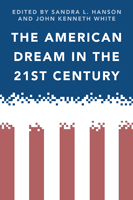

A multidisciplinary conversation on the state of the American Dream
A multidisciplinary conversation on the state of the American Dream


 A multidisciplinary conversation on the state of the American Dream
A multidisciplinary conversation on the state of the American Dream

|  |
The American Dream in the 21st Centuryedited by Sandra Hanson and John Whitepaper EAN: 978-1-43990-315-5 (ISBN: 1-4399-0315-8) |
"The diversity of contributions�from historians, political scientists, sociologists, and a pollster�distinguish The American Dream in the 21st Century from many other books on the topic. The multi-disciplinary focus is especially useful, as chapters provide cultural interpretations of Americans� attitudes toward the American Dream through the lenses of race, gender, religion and ethics."
—Arne L. Kalleberg, Kenan Distinguished Professor of Sociology, University of North Carolina at Chapel Hill
The American Dream has long been a dominant theme in U.S. culture, one with enduring significance, but these are difficult times for dreamers. The editors of and contributors to The American Dream in the 21st Century examine the American Dream historically, socially, and economically and consider its intersection with politics, religion, race, gender, and generation.
The conclusions presented in this short, readable volume provide both optimism for the faith that most Americans have in the possibility of achieving the American Dream and a realistic assessment of the cracks in the dream. The last presidential election offered hope, but the experts here warn about the need for better programs and policies that could make the dream a reality for a larger number of Americans.
Excerpt available at www.temple.edu/tempress
"The American Dream in the 21st Century is an engaging look at the transformations the American Dream has experienced and how they have evolved�from private vs. public, to material vs. spiritual. The editors wisely realize that the dream has changed, not disappeared or died. This book is a worthwhile read for anyone interested in a detailed view of how these changes fit into the history of the American Dream and a look into potential futures."
—Maria Alejandra Quijada, Assistant Professor, Loyola Marymount University College of Business
"This collection of essays addresses the question of how the American dream helps maintain a stable society into the 21st century, despite the fact that the dream is (and always has been) inaccessible to a large percentage of the population, perhaps a majority.... The authors point out how the dream builds a patriotic sense that the US is unique and superior, and anyone who suggests otherwise risks isolation. A politician who questions the dream may be committing career suicide. Summing Up: Recommended."
—Choice
Introduction: The Making of and Persistence of the American Dream • John Kenneth White and Sandra L. Hanson
1. Twilight�s Gleaming: The American Dream and the Ends of Republics • Jim Cullen
2. The Politics of the American Dream, 1980 to 2008 • Michael C. Kimmage
3. The Presidency and the Making of the American Dream • John Kenneth White
4. Dreaming in Black and White • James W. Loewen
5. Whose Dream? Gender and the American Dream • Sandra L. Hanson
6. Want Meets Necessity in the New American Dream • John Zogby
7. Religion and the American Dream: A Catholic Reflection in a Generational Context • William V. D�Antonio
Conclusions: The American Dream: Where Are We? • Sandra L. Hanson and John Kenneth White
Sandra L. Hanson is Professor of Sociology and Research Associate at the Institute for Policy Research and Catholic Studies at the Catholic University of America. She is the author of Lost Talent: Women in the Sciences and Swimming Against the Tide: African American Girls and Science Education (both Temple).
John Kenneth White is Professor of Politics at the Catholic University of America and is the author of several books on American politics. His latest is Barack Obama's America: How New Conceptions of Race, Family, and Religion Ended the Reagan Era.
Sociology
Political Science and Public Policy
American Studies
© 2015 Temple University. All Rights Reserved. This page: http://www.temple.edu/tempress/titles/2112_reg.html.